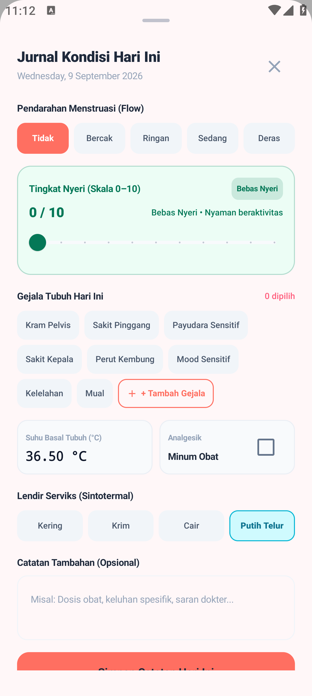
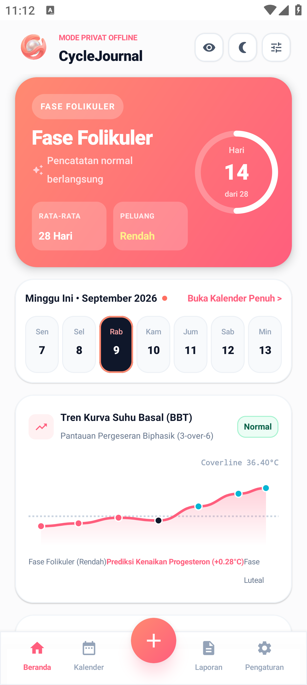

CycleJournal
Kalender haid, masa subur, dan jurnal biomedis 100% offline dengan enkripsi zero-knowledge, deteksi anomali FIGO, dan laporan PDF siap dokter SpOG.
Tanpa pendaftaran akun • Data tetap di ponsel Anda

Kenapa Aplikasi Ini Diciptakan?
Data kesehatan reproduksi sangat sensitif. Banyak aplikasi populer penuh iklan, langganan mahal, dan rawan isu privasi data.
Aplikasi haid umum: penuh iklan & data bocor
- ✗ Data kesehatan diproses di server pihak ketiga
- ✗ Langganan bulanan mahal untuk fitur dasar
- ✗ Laporan tidak enak dibaca dokter kandungan
CycleJournal: medical-grade & privacy-first
- ✓ 100% offline-first, enkripsi SQLCipher di perangkat
- ✓ Beli putus sekali, tanpa tagihan bulanan
- ✓ PDF A4 siap dokter SpOG dengan metrik FIGO
Didesain untuk Kebutuhan Medis Nyata
Laporan PDF Siap SpOG
Ekspor laporan klinis A4 1-halaman dengan metrik FIGO, red flags anomali, tabel riwayat siklus, dan kotak tanda tangan dokter.
100% Offline & Zero-Knowledge
Semua data di perangkat Anda terenkripsi hardware (SQLCipher). Cadangan cloud opsional dienkripsi AES-256-GCM di sisi klien — server tak pernah melihat isinya.
Deteksi Anomali FIGO
Screening otomatis untuk oligomenorea, polimenorea, siklus tak teratur, perdarahan memanjang, spotting, fase luteal pendek, dan dismenore berat.
Kedaulatan Data
Ekspor data mentah ke CSV (Excel-ready) kapan pun, sinkronisasi backup bulanan, dan hapus total seluruh data dalam satu sentuhan.
Tangkapan Layar Resmi Aplikasi
Geser untuk melihat antarmuka bersih dan modern tanpa emoji.
Dasbor Siklus
Fase hormonal, hari ke-siklus, dan tren BBT.

Jurnal Gejala
Catat BBT, lendir, dan skala nyeri VAS 0–10.

Laporan Medis
PDF A4 dengan metrik FIGO & red flags.

Privasi & Keamanan
Kunci PIN, biometrik, dan enkripsi hardware.

Kedaulatan Data
CSV Excel-ready & hapus total data.
Pilihan Transparan Tanpa Langganan
Model beli putus sekali bayar, tanpa tagihan bulanan.
Pelacakan dasar dan kalender siklus tanpa biaya.
- Kalender & prediksi masa subur
- Jurnal gejala harian
- Ekspor PDF dengan iklan singkat
Buka semua fitur klinis dan pencadangan cloud tanpa batas.
- Ekspor PDF tanpa batas (tanpa iklan)
- Sinkronisasi backup cloud otomatis
- Nonaktifkan seluruh iklan
Mulai Catat Siklus Anda dengan Aman Sekarang
Unduh langsung dari Google Play Store dan kendalikan penuh data kesehatan reproduksi Anda.
Disclaimer Medis: CycleJournal adalah alat pencatatan klinis pribadi untuk referensi dokter kandungan dan bukan pengganti diagnosis medis profesional, bukan alat kontrasepsi, dan tidak boleh digunakan sebagai satu-satunya dasar keputusan kesehatan. Selalu konsultasikan dengan tenaga medis berkompeten.